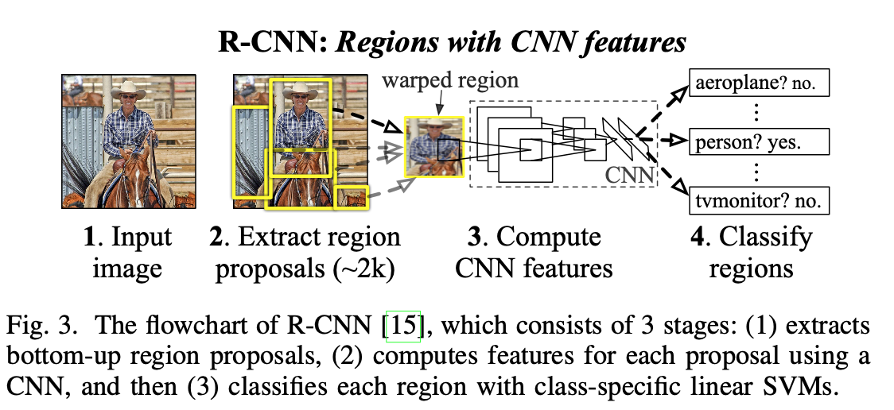
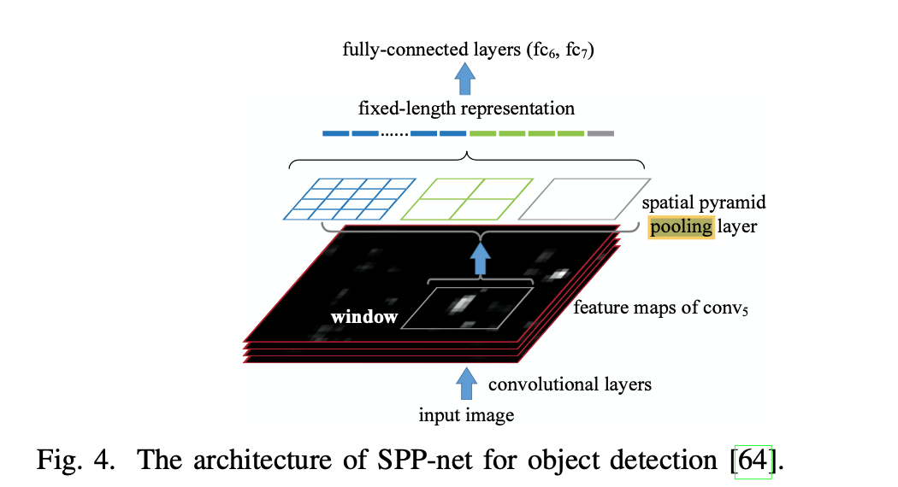
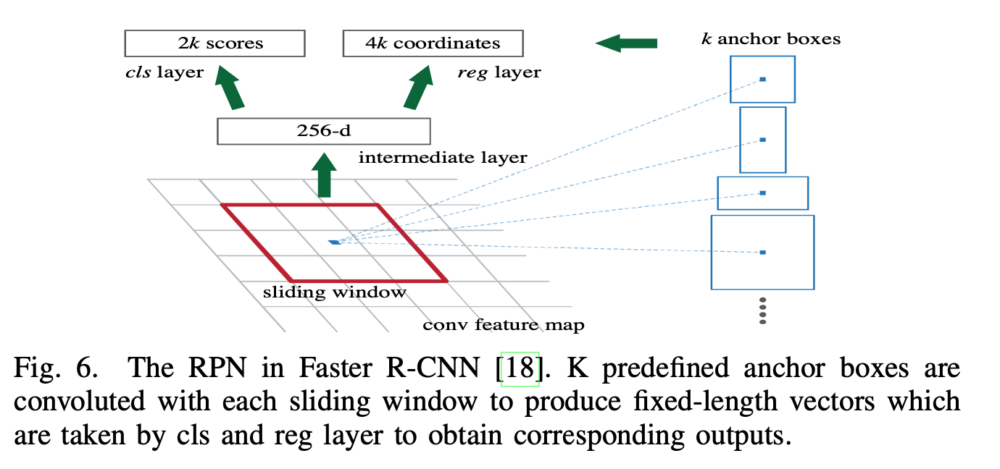

A multistep process
The largest differnce between the two main methods of OD is pipelining the process or not. Region propsal networks use a multi-part pipeline, that emulate how we might assume that our own brain works. The Region proposal aspect is similar to what we’d deem “attention”, then the rest of the network extracts and classifies the features. This paper reviews the popular methods:
R-CNN
Seems to be the father of the regional proposal. Strong in its use of CNN’s, but lacking in speed. It’s based on this pipeline.
- Region proposal generation. Using selective search, it will generate about 2k region proposals for each method. It uses selective search. This article gives a good breakdown of SS https://www.learnopencv.com/selective-search-for-object-detection-cpp-python/
- CNN feature extraction. The pixels of each proposed region are adjusted to pass through the CNN network to extract a 4096-dimensional feature as the final representation.
- Classification and localization - uses SVMs to predict the class while greedy non-max suppression (NMS) is used to produce final bounding boxes.
Problems Each subsequent model is an attempt to improve one or more problems to R-CNN

SPP-net (that is Spacial Pyramid Pooling) network
This is a network based on the idea of having an intermediate layer, created from 3 different scales. This layer is shown below in figure4 as the spatial pyramid pooling layer.

Fast R-CNN
Although the SPP-net adds impressive results, it still suffers from many of the same slow pipeline issues as R-CNN. Fast R-CNN addresses this by adding the ROI pooling layer and merging the output prediction into a multitask problem to predict both class and bbox from same ROI feature vector.
The loss function to train this multi-task output is a key addition to Fast R-CNN
Faster R-CNN
Faster R-CNN addresses the regional proposal issue with a Region Proposal Network, which is based on CNNs.
This allows end to end training with backprop, however, at current time, it only runs at 5 FPS.

R-FCN
SotA image classification networks are fully convolutional, and it would seem natural to construct the same for OD networks; however, it is empirically shown that is not the case.
[47] K. He, X. Zhang, S. Ren, and J. Sun, “Deep residual learning for image
recognition,” in CVPR, 2016.
As the paper concludes, it is due to the “dilemma of respecting translation variance in object detection compared with increasing translation invariance in image classification. In other words, shifting an object inside an image should be indicriminative in image classification, but” [is meaningful in bounding box predicting].
Since the RoI pooling layer can break down that invariance, Li et al. proposed a region-based fully convolutional network.
With R-FCN, powerful classification networks can be adopted which utilizes many shared layers.